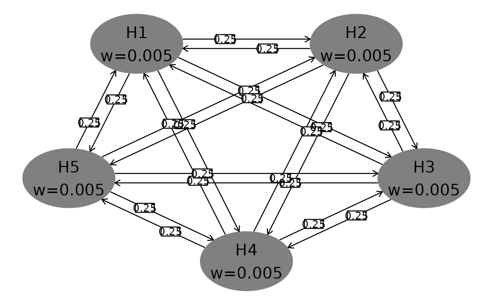
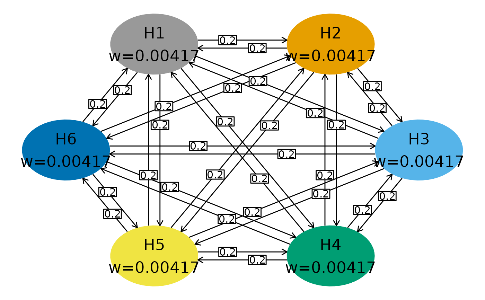
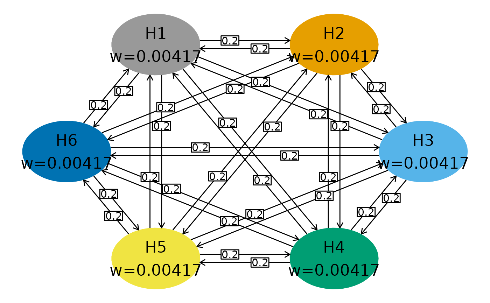

hGraph() plots a multiplicity graph defined by user inputs.
The graph can also be used with the ***gMCP*** package to evaluate a set of nominal p-values for the tests of the hypotheses in the graph
Usage
hGraph(
nHypotheses = 4,
nameHypotheses = paste("H", (1:nHypotheses), sep = ""),
alphaHypotheses = 0.025/nHypotheses,
m = matrix(array(1/(nHypotheses - 1), nHypotheses^2), nrow = nHypotheses) -
diag(1/(nHypotheses - 1), nHypotheses),
fill = 1,
palette = grDevices::gray.colors(length(unique(fill)), start = 0.5, end = 0.8),
labels = LETTERS[1:length(unique(fill))],
legend.name = " ",
legend.position = "none",
halfWid = 0.5,
halfHgt = 0.5,
trhw = 0.1,
trhh = 0.075,
trprop = 1/3,
digits = 5,
trdigits = 2,
size = 6,
boxtextsize = 4,
arrowsize = 0.02,
radianStart = if ((nHypotheses)%%2 != 0) { pi * (1/2 + 1/nHypotheses) } else {
pi * (1 + 2/nHypotheses)/2 },
offset = pi/4/nHypotheses,
xradius = 2,
yradius = xradius,
x = NULL,
y = NULL,
wchar = if (as.character(Sys.info()[1]) == "Windows") { "w" } else { "w" }
)Arguments
- nHypotheses
number of hypotheses in graph
- nameHypotheses
hypothesis names
- alphaHypotheses
alpha-levels or weights for ellipses
- m
square transition matrix of dimension `nHypotheses`
- fill
grouping variable for hypotheses
- palette
colors for groups
- labels
text labels for groups
- legend.name
text for legend header
- legend.position
text string or x,y coordinates for legend
- halfWid
half width of ellipses
- halfHgt
half height of ellipses
- trhw
transition box width
- trhh
transition box height
- trprop
proportion of transition arrow length where transition box is placed
- digits
number of digits to show for alphaHypotheses
- trdigits
digits displayed for transition weights
- size
text size in ellipses
- boxtextsize
transition text size
- arrowsize
size of arrowhead for transition arrows
- radianStart
radians from origin for first ellipse; nodes spaced equally in clockwise order with centers on an ellipse by default
- offset
rotational offset in radians for transition weight arrows
- xradius
horizontal ellipse diameter on which ellipses are drawn
- yradius
vertical ellipse diameter on which ellipses are drawn
- x
x coordinates for hypothesis ellipses if elliptical arrangement is not wanted
- y
y coordinates for hypothesis ellipses if elliptical arrangement is not wanted
- wchar
character for alphaHypotheses in ellipses
Details
See vignette **Multiplicity graphs formatting using ggplot2** for explanation of formatting.
Examples
library(tidyr)
# Defaults: note clockwise ordering
hGraph(5)

# Add colors (default is 3 gray shades)
hGraph(3,fill=1:3)
 # Colorblind palette
cbPalette <- c("#999999", "#E69F00", "#56B4E9", "#009E73",
"#F0E442", "#0072B2", "#D55E00", "#CC79A7")
hGraph(6,fill=as.factor(1:6),palette=cbPalette)

# Use a hue palette
hGraph(4,fill=factor(1:4),palette=scales::hue_pal(l=75)(4))
# different alpha allocation, hypothesis names and transitions
alphaHypotheses <- c(.005,.007,.013)
nameHypotheses <- c("ORR","PFS","OS")
m <- matrix(c(0,1,0,
0,0,1,
1,0,0),nrow=3,byrow=TRUE)
hGraph(3,alphaHypotheses=alphaHypotheses,nameHypotheses=nameHypotheses,m=m)
# Colorblind palette
cbPalette <- c("#999999", "#E69F00", "#56B4E9", "#009E73",
"#F0E442", "#0072B2", "#D55E00", "#CC79A7")
hGraph(6,fill=as.factor(1:6),palette=cbPalette)

# Use a hue palette
hGraph(4,fill=factor(1:4),palette=scales::hue_pal(l=75)(4))
# different alpha allocation, hypothesis names and transitions
alphaHypotheses <- c(.005,.007,.013)
nameHypotheses <- c("ORR","PFS","OS")
m <- matrix(c(0,1,0,
0,0,1,
1,0,0),nrow=3,byrow=TRUE)
hGraph(3,alphaHypotheses=alphaHypotheses,nameHypotheses=nameHypotheses,m=m)
 # Custom position and size of ellipses, change text to multi-line text
# Adjust box width
# add legend in middle of plot
hGraph(3,x=sqrt(0:2),y=c(1,3,1.5),size=6,halfWid=.3,halfHgt=.3, trhw=0.6,
palette=cbPalette[2:4], fill = c(1, 2, 2),
legend.position = c(.6,.5), legend.name = "Legend:", labels = c("Group 1", "Group 2"),
nameHypotheses=c("H1:\n Long name","H2:\n Longer name","H3:\n Longest name"))
# Custom position and size of ellipses, change text to multi-line text
# Adjust box width
# add legend in middle of plot
hGraph(3,x=sqrt(0:2),y=c(1,3,1.5),size=6,halfWid=.3,halfHgt=.3, trhw=0.6,
palette=cbPalette[2:4], fill = c(1, 2, 2),
legend.position = c(.6,.5), legend.name = "Legend:", labels = c("Group 1", "Group 2"),
nameHypotheses=c("H1:\n Long name","H2:\n Longer name","H3:\n Longest name"))